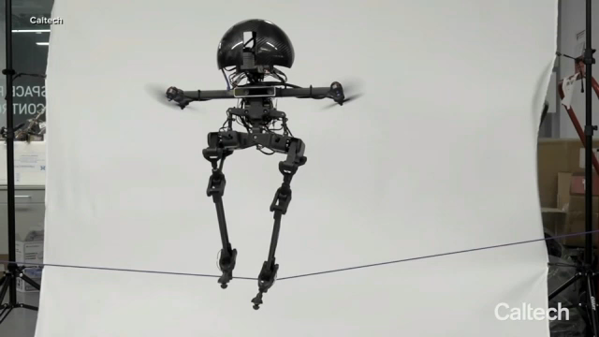
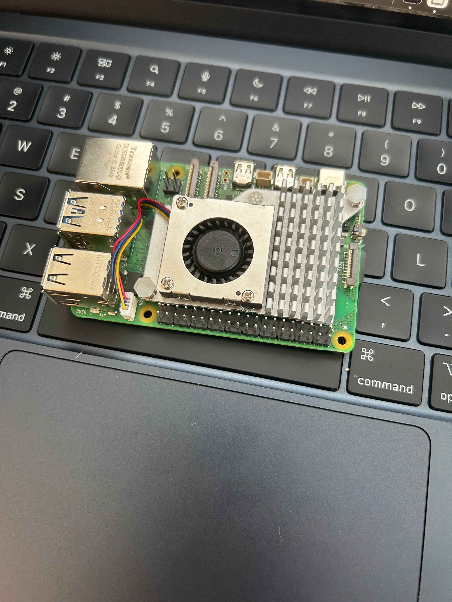

Projects
-
1. One of the projects I’m working on is very risky but extremely fun. I’m in the process of starting a company focused on a new class of robotics that I call H.E.A.D. (Humanoid Electric Autonomous Drone). Essentially, this robot can transform between a humanoid mode and a drone mode. It’s a perfect solution for high-risk jobs such as telecommunications, rescue, or defense. To the right is a photo of a similar, though not identical, project developed at Caltech. I’ll be posting updates about this venture here!
-
2. Over the last few months, I’ve really enjoyed exploring FPV drones. I’m currently in the process of building one using foam board, along with components like a microcontroller, an electronic speed controller, and more. I’ve been inspired by a couple of YouTubers, AeroStuff FPV and ProjectAir. You can check out the code for this project and my other work on my GitHub.

-
3. This past Christmas, I received a Raspberry Pi 5 and have been experimenting with it ever since. It’s incredibly cool, and I’m amazed by how small yet powerful this computer is. My goal is to use the Pi 5 as the central processor for the H.E.A.D. project I mentioned above. I’ve started programming on it and am currently learning how to make it function as the brain of a humanoid robot. Stay tuned for updates—exciting things are ahead!